Now that we have reviewed the concept of number systems and the idea of counting in a variety of bases, let’s look more carefully at what exactly a numeric “base” is.
As you learned long ago in grade school, 123 is the way we normally write the number one hundred twenty three. This is because the “1” is in the hundreds place, the “2” is in the tens place and the “3” is in the ones place. Each digit is multiplied by the value of its position and the results are added together. This process is illustrated below:
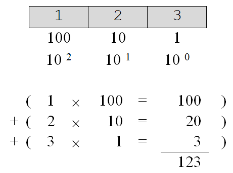The system we normally use for representing numbers is called the decimal number system. In this system, the rightmost digit is referred to as being in the one’s or “units” position. Immediately to the left of the units position is the ten’s position. To the left of the ten’s position is the hundred’s position, then the thousand’s, then the ten thousand’s, etc. The decimal number system is a “base ten” positional number system because the value of each position can be expressed as a power of the number ten. The exponent that the base is raised to is given by the position minus one. The leftmost position, or units position, is 10 0, the tens position is 10 1, the hundreds is 10 2, the thousands is 10 3, etc. The value of each position is exactly ten times the value of the position immediately to its right.
The other bases work similarly. In the binary system, the base is two, so the values of the positions (given from right to left) are one (20), two (21), four (22), eight (23), sixteen (24), thirty-two (25), etc. The value of each position in a base two system is two times the value of the position immediately to its right. The number five is represented in base two as 101two since there is a one in the four’s position and a one in the units position, as is illustrated below:
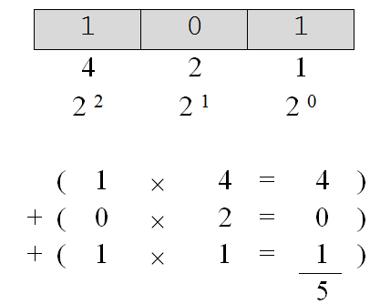In the hexadecimal number system, the base is sixteen. Hence, the values of the positions (again from right to left) are one (160), sixteen (161), two hundred fifty six (162), four thousand ninety six (163), etc. The value of each position in this system is exactly sixteen times the value of the position immediately to its right. The value of the base sixteen number 1A3sixteen is four hundred nineteen, since there is one in the two hundred and fifty six position, ten in the sixteen’s position, and three in the units position. The calculations illustrating this result are given below. Note that the computations themselves are shown in the decimal system, since that is the system we are most familiar with.
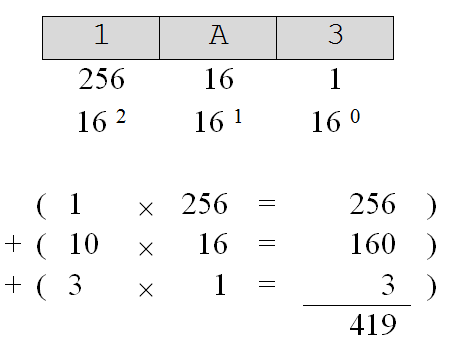As a final example, illustrates the representation of the number “nineteen ninety nine” in all three of the bases we have discussed (base ten, base two, and base sixteen).
One of the most common tasks we face when working with multiple bases is converting numbers from one base to another. We have already seen how to convert from base sixteen and base two to base ten – simply multiply the value of each symbol by the value of its position and add the results together. But how do we convert from base ten to base sixteen or to base two? We also need to figure out how to convert from base two to base sixteen and from base sixteen to base two.
Converting from base two to base sixteen and from base sixteen to base two is easy. In fact, the only reason computer scientists even use base sixteen is because it serves as convenient “shorthand” for base two. illustrates the fact that each base sixteen digit can be represented by a group of exactly four base two digits.
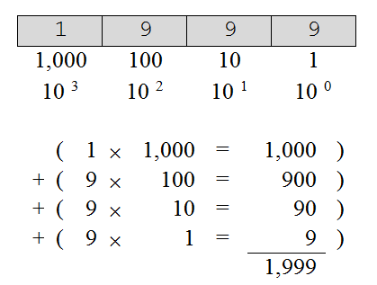 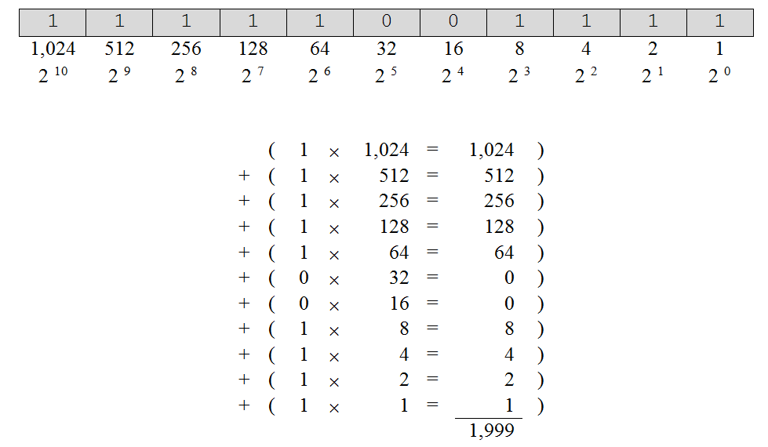 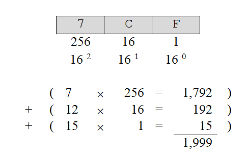Nineteen ninety nine – written in base ten, base two, and base sixteen
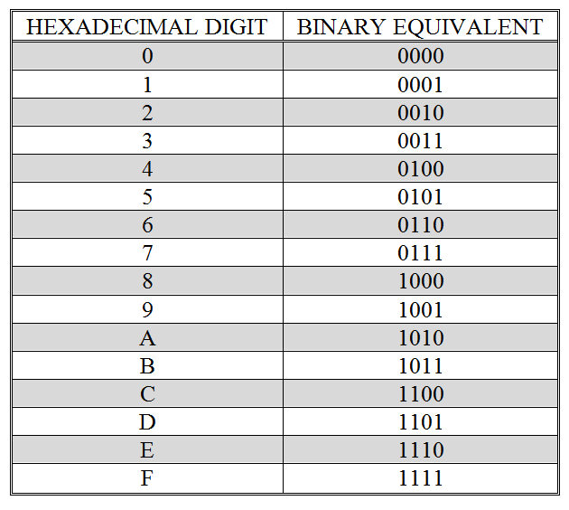Hexadecimal digits and their binary equivalence’s
To convert from base sixteen to base two, simply replace each base sixteen digit with its corresponding group of four binary digits. For example, the rather imposing hexadecimal number 1AFC3sixteen can easily be converted its binary representation as illustrated in
Converting from base two to base sixteen is just as straightforward. We scan the base two number from right to left replacing each group of four binary digits that we encounter with the equivalent hexadecimal digit. It is important that we group the digits of the base two representation from right to left in case the number of digits is not evenly divisible by four. If this occurs, we simply add leading 0’s until the number of digits is divisible by four. Conversion of the bit pattern 11111001111two to its hexadecimal representation is represented in
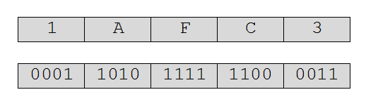Conversion of a number from base sixteen to base two
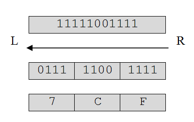L R
Conversion of a number from base two to base sixteen
It is important that you understand that these conversions between binary and hexadecimal representations in no way change the actual number being represented, 7CFsixteen and 11111001111two both refer to the same number 1999ten as was illustrated in
We have now looked at conversion methods from base two (and base sixteen) to base ten (), from base sixteen to base two (), and from base two to base sixteen (). The only conversions involving decimal, hexadecimal, and binary that we have yet to cover are from base ten to base sixteen and from base ten to base two. We really only need to look at base ten to base two conversion, since conversion between base two and sixteen is so trivial. If you have a base ten number and want its base sixteen representation, you can apply a decimal to binary conversion algorithm and then change the base two result to its base sixteen representation via the grouping method described above.
A number can be converted from decimal to binary by subtracting from it the largest power of two that is less than or equal to the number, repeating until a remainder of zero is reached. The binary representation of the number is then formed by placing a “1” in the positions corresponding to each of the powers of two that were subtracted. A “0” is placed in the positions corresponding to the powers of two that were not subtracted.
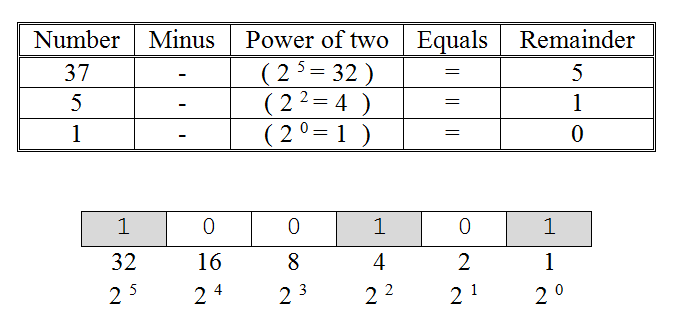Conversion of a number from base ten to base two
Given the decimal number 37, the largest power of two that can be subtracted is 32 = 2 5, leaving a remainder of five. The largest power of two that can be subtracted from 5 is 4 = 2 2, which leaves a remainder of one. Finally, the largest power of two that can be subtracted from 1 is 1=2 0, leaving a remainder of zero. The base two representation of the number is thus formed by placing 1’s in the thirty-two’s, four’s, and units positions and 0’s in all other positions, giving 100101. The conversion process for this number is illustrated in .
Exercises for
- Convert the following numbers from base two to base ten. 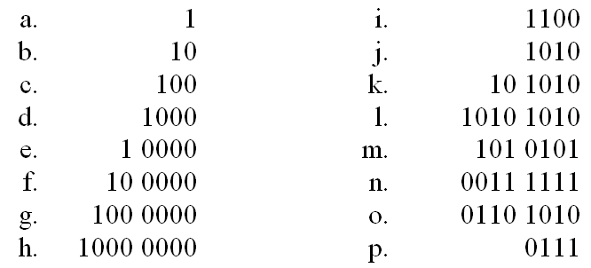
- Convert the following numbers from base sixteen to base ten. 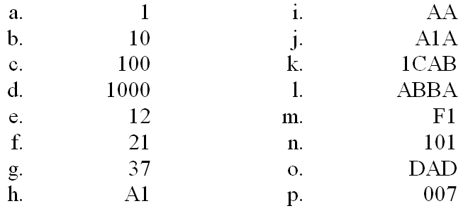
-
Convert the following numbers from base sixteen to base two.

- Convert the following numbers from base two to base sixteen. 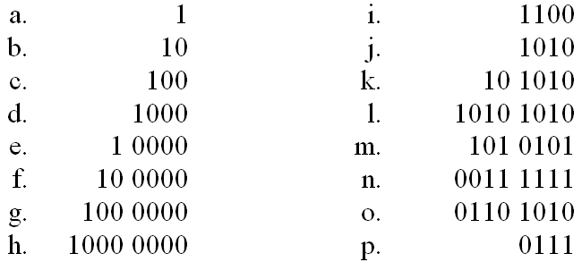
- Convert the following numbers from base ten to base two. 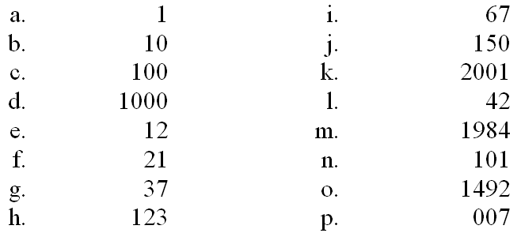
- Convert the following numbers from base ten to base sixteen. 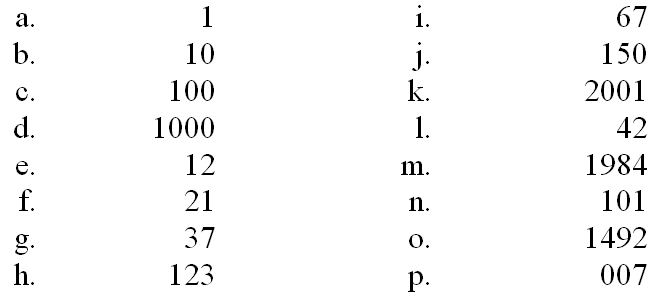